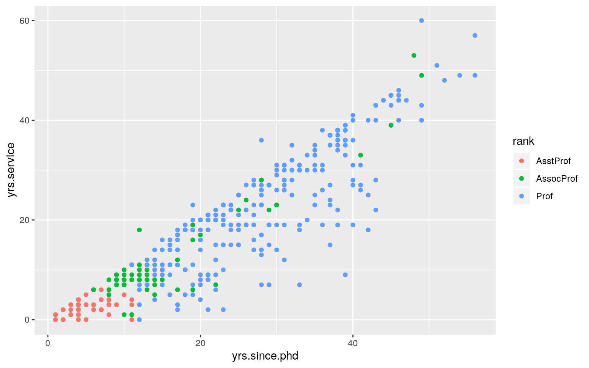
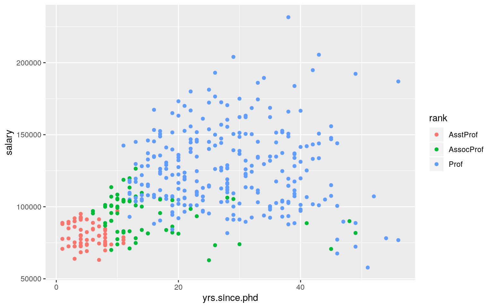
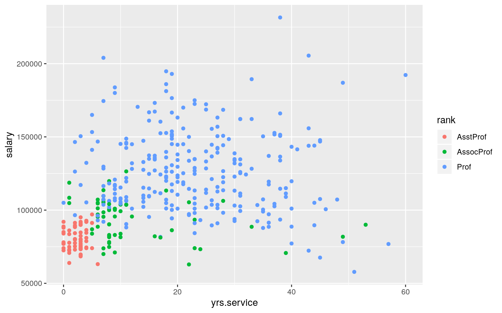
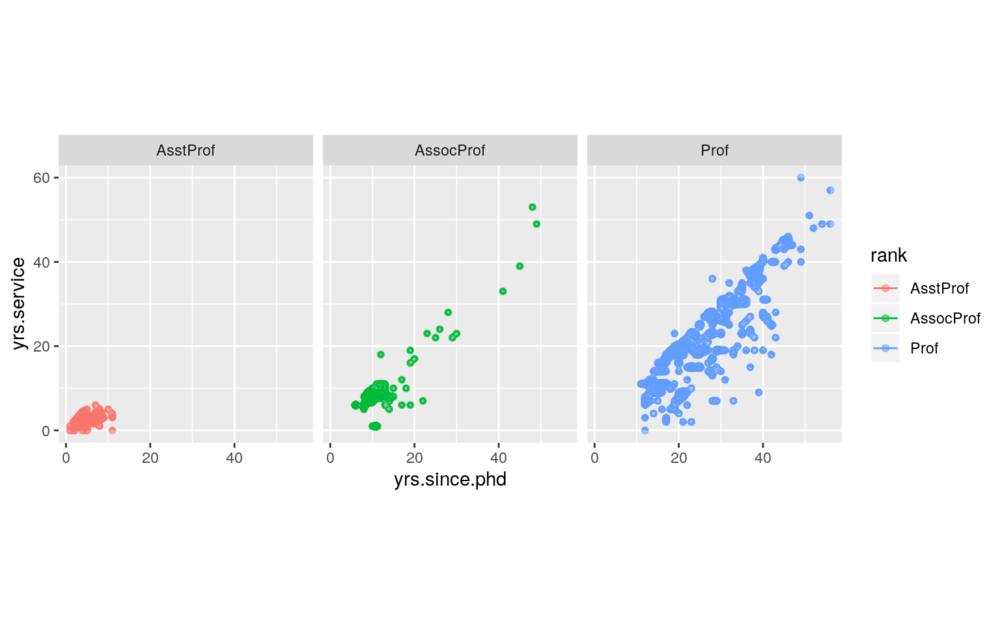
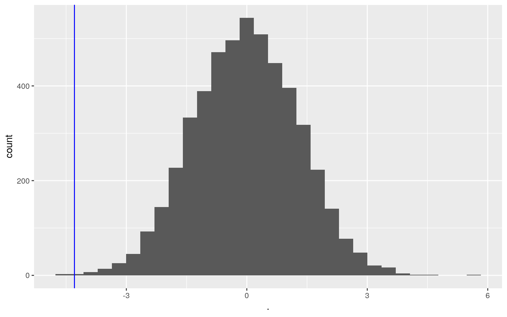
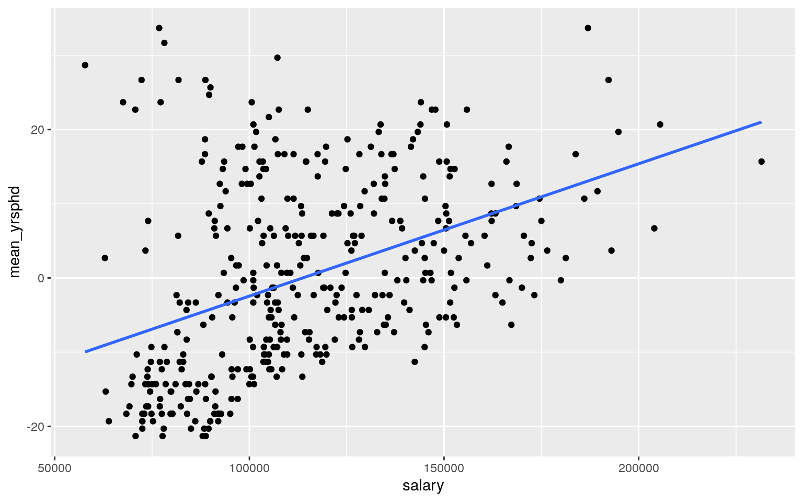
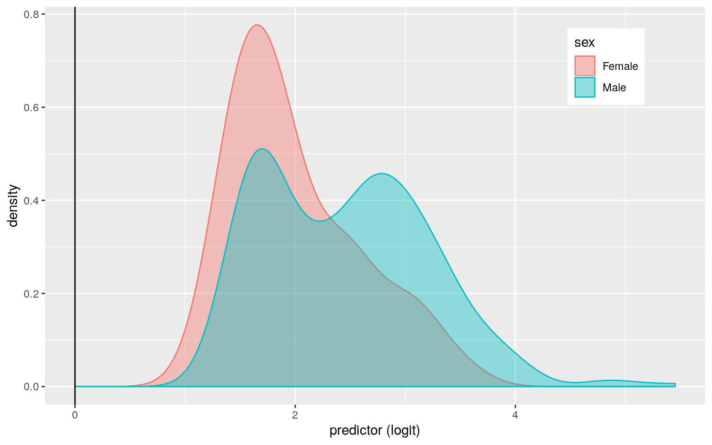
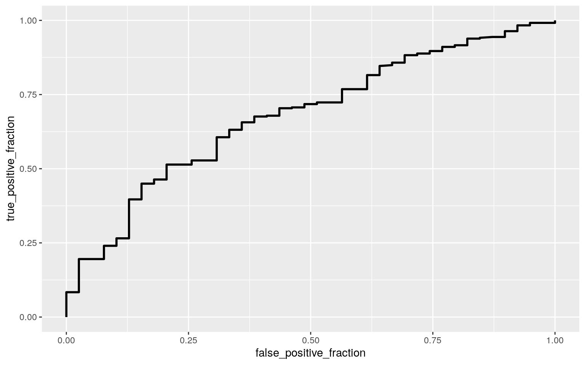

“Salaries” is a dataset found in the carData package in R. It contains information collected from assistant, associate, and tenured professors of a US college during the 2008-2009 nine-month academic year. Professors self-reported their professional rank at the institution, discipline, number of years since they completed their PhD, number of years of service (teaching), their sex, and their nine-month salary. 397 individuals constitute this dataset, with 358 being men and 39 being women. “Salaries” was compiled so that the administration could monitor pay differences between male and female professors, but I think they should have been monitoring their hiring practices. Each professor’s subject of specialty was assigned a binary value (A or B) under the discipline variable. Individuals of discipline A belong to a theoretical department like English, History, or Philosophy. Those of discipline B belong to an applied department such as Chemistry, Biology, or Engineering. I selected this dataset because I wished to analyze how factors like gender, subject, and experience influenced the salaries of professors much like those who teach me everyday.
class_diag<-function(probs,truth){
if(is.numeric(truth)==FALSE & is.logical(truth)==FALSE) truth<-as.numeric(truth)-1
tab<-table(factor(probs>.5,levels=c("FALSE","TRUE")),truth)
prediction<-ifelse(probs>.5,1,0)
acc=mean(truth==prediction)
sens=mean(prediction[truth==1]==1)
spec=mean(prediction[truth==0]==0)
ppv=mean(truth[prediction==1]==1)
#CALCULATE EXACT AUC
ord<-order(probs, decreasing=TRUE)
probs <- probs[ord]; truth <- truth[ord]
TPR=cumsum(truth)/max(1,sum(truth))
FPR=cumsum(!truth)/max(1,sum(!truth))
dup<-c(probs[-1]>=probs[-length(probs)], FALSE)
TPR<-c(0,TPR[!dup],1); FPR<-c(0,FPR[!dup],1)
n <- length(TPR)
auc<- sum( ((TPR[-1]+TPR[-n])/2) * (FPR[-1]-FPR[-n]) )
data.frame(acc,sens,spec,ppv,auc)
}library(dplyr,glmnet,ggplot2)
library(sandwich);library(lmtest)
library(plotROC)
library(glmnet)
install.packages("CARS")
sal<-Salaries%>%mutate(y=ifelse(sex=="Male",1,0))#manova
man1 <- manova(cbind(yrs.since.phd,yrs.service,salary)~rank, data=sal)
summary(man1)## Df Pillai approx F num Df den Df Pr(>F)
## rank 2 0.63281 60.633 6 786 < 2.2e-16 ***
## Residuals 394
## ---
## Signif. codes: 0 '***' 0.001 '**' 0.01 '*' 0.05 '.' 0.1
' ' 1#anova
summary.aov(man1)## Response yrs.since.phd :
## Df Sum Sq Mean Sq F value Pr(>F)
## rank 2 32390 16194.8 191.18 < 2.2e-16 ***
## Residuals 394 33376 84.7
## ---
## Signif. codes: 0 '***' 0.001 '**' 0.01 '*' 0.05 '.' 0.1
' ' 1
##
## Response yrs.service :
## Df Sum Sq Mean Sq F value Pr(>F)
## rank 2 24812 12406 115.9 < 2.2e-16 ***
## Residuals 394 42175 107
## ---
## Signif. codes: 0 '***' 0.001 '**' 0.01 '*' 0.05 '.' 0.1
' ' 1
##
## Response salary :
## Df Sum Sq Mean Sq F value Pr(>F)
## rank 2 1.4323e+11 7.1616e+10 128.22 < 2.2e-16 ***
## Residuals 394 2.2007e+11 5.5855e+08
## ---
## Signif. codes: 0 '***' 0.001 '**' 0.01 '*' 0.05 '.' 0.1
' ' 1#pairwise t tests
pairwise.t.test(sal$yrs.since.phd,sal$rank,
p.adj="none")##
## Pairwise comparisons using t tests with pooled SD
##
## data: sal$yrs.since.phd and sal$rank
##
## AsstProf AssocProf
## AssocProf 3.6e-10 -
## Prof < 2e-16 < 2e-16
##
## P value adjustment method: nonepairwise.t.test(sal$yrs.service,sal$rank,
p.adj="none")##
## Pairwise comparisons using t tests with pooled SD
##
## data: sal$yrs.service and sal$rank
##
## AsstProf AssocProf
## AssocProf 2.0e-07 -
## Prof < 2e-16 3.2e-13
##
## P value adjustment method: nonepairwise.t.test(sal$salary,sal$rank,
p.adj="none")##
## Pairwise comparisons using t tests with pooled SD
##
## data: sal$salary and sal$rank
##
## AsstProf AssocProf
## AssocProf 0.0016 -
## Prof <2e-16 <2e-16
##
## P value adjustment method: none#Bonferroni
.05/13## [1] 0.003846154#type 1 error probability
1-(1-.05)^13## [1] 0.4866579I ran a multivariate analysis of variance, or MANOVA, on the “Salaries” dataset. The purpose of this test was to determine if there was a significant mean difference in years since PhD, years of service, or salary across the three levels of rank. The results of the MANOVA had a p-value of 2.2e-16, meaning that there was a significant mean difference across rank for one of the three numeric variables. I then ran three univariate ANOVA tests to ascertain which variable was significant. All three returned p-values of 2.2e-16, therefore, I could conclude that years since PhD, years of service, and salary all significantly differ according to an individual’s rank. Nine pairwise t tests gave insight into the specific mean differences between assistant, associate, and tenured professors. All ranks significantly differed from each other on all three variables. The magnitude of significance corresponded to the hierarchial level of each individual’s rank, meaning associate professors differed less from tenured professors than assistant professors did in years of service. Assistant and associate professors had less significant differences between each other than with professors. This revealed that while every difference was significant, associate professors are more similar to assitant professors than they are to those who have received tenure. In total, I ran 13 hypothesis tests, and my Bonferroni corrected p-value was 0.003846154. With the correction, all results remained significant. The probability that I made a Type I error was 0.4866579.
sal%>%ggplot(aes(yrs.since.phd,yrs.service,color=rank))+geom_point() 
sal%>%ggplot(aes(yrs.since.phd,salary,color=rank))+geom_point() 
sal%>%ggplot(aes(yrs.service,salary,color=rank))+geom_point() 
ggplot(sal, aes(x = yrs.since.phd, y = yrs.service,color=rank)) +
geom_point(alpha = .5) + geom_density_2d(h=2) + coord_fixed() + facet_wrap(~rank)
sal_num <- sal%>%select(rank,yrs.since.phd,yrs.service,salary)
covmats<-sal_num%>%group_by(rank)%>%do(covs=cov(.[2:4]))
for(i in 1:3){print(as.character(covmats$rank[i])); print(covmats$covs[i])}## [1] "AsstProf"
## [[1]]
## yrs.since.phd yrs.service salary
## yrs.since.phd 6.458616 1.748304 -3289.074
## yrs.service 1.748304 2.237449 1743.627
## salary -3289.074175 1743.626866 66816117.409
##
## [1] "AssocProf"
## [[1]]
## yrs.since.phd yrs.service salary
## yrs.since.phd 93.17237 90.4184 -38438.19
## yrs.service 90.41840 102.0136 -40264.14
## salary -38438.18552 -40264.1379 191315920.57
##
## [1] "Prof"
## [[1]]
## yrs.since.phd yrs.service salary
## yrs.since.phd 102.18845 98.94995 -1.651423e+02
## yrs.service 98.94995 134.33952 -1.602912e+04
## salary -165.14235 -16029.11946 7.683249e+08While all 13 of the above tests yielded significant results, several MANOVA assumptions were violated. There is a clear linear relationship between years since PhD and year serve, but the relationship is less obvious when those two variables are plotted against salary. Additionally, the data failed the MANOVA assumption of multivariate normality. Data for assistant professors is highly concentrated, but associate and tenured professors show far too much variation to be considered normal. Finally, the data fails the homogenity of variances assumption.
obs_tstat <- sal%>%group_by(discipline)%>%summarize(means=mean(yrs.service))%>%
summarize(`mean_diff:`=diff(means))
obs_tstat## # A tibble: 1 x 1
## `mean_diff:`
## <dbl>
## 1 -4.29sal%>%filter(discipline=="A")%>%summarise(mean(yrs.service))## mean(yrs.service)
## 1 19.95028sal%>%filter(discipline=="B")%>%summarise(mean(yrs.service))## mean(yrs.service)
## 1 15.65741rand_dist<-vector()
for(i in 1:5000){
new<-data.frame(time=sample(sal$yrs.since.phd),condition=sal$discipline)
rand_dist[i]<-mean(new[new$condition=="A",]$time)-
mean(new[new$condition=="B",]$time)}
mean(rand_dist> obs_tstat| rand_dist< -obs_tstat)## [1] 1rand_dist <- rand_dist%>%as.data.frame
ggplot(rand_dist,aes(x=.))+geom_histogram()+geom_vline(xintercept =-4.292869,col="blue")
profs <- sal%>%group_by(discipline)
t.test(data=profs,yrs.service~discipline)##
## Welch Two Sample t-test
##
## data: yrs.service by discipline
## t = 3.2811, df = 362.9, p-value = 0.001134
## alternative hypothesis: true difference in means is not
equal to 0
## 95 percent confidence interval:
## 1.719926 6.865811
## sample estimates:
## mean in group A mean in group B
## 19.95028 15.65741The two variables years since PhD and years of service intrigued me. I believe the difference to be attributed to those years prior to teaching when now professors may have been conducting formative research. Research as a career seems to be much more common among those in applied departments. I wished to see if years of service truly did vary between the two disciplines. My null hypothesis was that the mean difference in years of service between professors in departments A and B is equal to zero. Therefore, the alternatavie hypothesis is that the difference is not equal to zero. Prior to randomization, the mean difference between the two groups was computed to be -4.292869, with department A being greater. Randomization produced a distribution centered at a mean difference of zero. As is evidenced by the graph, the observed mean difference does intersect the tail of the randomized distribution curve. To determine if the observed t statistic was significant, I ran a Welch’s T Test on the original data. The resulting p-value of 0.001134 supported my rejection the null hypothesis and conclusion that the mean difference in years of service between professors in theoretical and applied departments is not equal to zero.
mean(sal$salary)## [1] 113706.5mean(sal$yrs.since.phd)## [1] 22.31486mean(sal$yrs.service)## [1] 17.61461sal$mean_sal <- sal$salary - mean(sal$salary)
sal$mean_yrsphd <- sal$yrs.since.phd - mean(sal$yrs.since.phd)
sal$mean_yrsser <- sal$yrs.service - mean(sal$yrs.service)
fit <- lm(salary~mean_yrsser*mean_yrsphd,data=sal)
summary(fit)##
## Call:
## lm(formula = salary ~ mean_yrsser * mean_yrsphd, data =
sal)
##
## Residuals:
## Min 1Q Median 3Q Max
## -63823 -17292 -2538 13158 107001
##
## Coefficients:
## Estimate Std. Error t value Pr(>|t|)
## (Intercept) 123533.470 1698.633 72.725 < 2e-16 ***
## mean_yrsser 250.528 254.880 0.983 0.326
## mean_yrsphd 1056.086 242.975 4.346 1.76e-05 ***
## mean_yrsser:mean_yrsphd -64.617 7.487 -8.630 < 2e-16 ***
## ---
## Signif. codes: 0 '***' 0.001 '**' 0.01 '*' 0.05 '.' 0.1
' ' 1
##
## Residual standard error: 25120 on 393 degrees of freedom
## Multiple R-squared: 0.3177, Adjusted R-squared: 0.3125
## F-statistic: 60.99 on 3 and 393 DF, p-value: < 2.2e-16resids <- fit$residuals
fitted <- fit$fitted.values
sal%>%ggplot(aes(salary,mean_yrsphd))+geom_point()+geom_smooth(method="lm",se=F)
fit$coefficients## (Intercept) mean_yrsser mean_yrsphd
mean_yrsser:mean_yrsphd
## 123533.47023 250.52836 1056.08650 -64.61694#normal distribution!
ks.test(resids, "pnorm", mean=0, sd(resids))##
## One-sample Kolmogorov-Smirnov test
##
## data: resids
## D = 0.062195, p-value = 0.09271
## alternative hypothesis: two-sidedbptest(fit)##
## studentized Breusch-Pagan test
##
## data: fit
## BP = 44.85, df = 3, p-value = 9.957e-10coeftest(fit, vcov = vcovHC(fit))##
## t test of coefficients:
##
## Estimate Std. Error t value Pr(>|t|)
## (Intercept) 123533.470 1974.967 62.5496 < 2.2e-16 ***
## mean_yrsser 250.528 310.707 0.8063 0.4205478
## mean_yrsphd 1056.086 294.532 3.5856 0.0003786 ***
## mean_yrsser:mean_yrsphd -64.617 11.010 -5.8687 9.343e-09
***
## ---
## Signif. codes: 0 '***' 0.001 '**' 0.01 '*' 0.05 '.' 0.1
' ' 1In the same vein as the randomization test above, I used this linear regression to determine if experience (years since PhD and years served) were significant predictors of salary. The intercept of the model is $123533.47, the coefficients mean centered years served, years since PhD, and the interaction are $250.52, $1056.08, and -$64.61 respectively. Every year a professor works past the mean number of years for each variable, the model predicts their salary to increase by $1241.99.
Using a one-sample Kolmogorov-Smirnov test, the residuals of the model were found to be normal. This validates the normality assumption of linear regresssion. Unfortunately, a Breusch-Pagan test judged the model to be heteroskedastic, thus failing the assumption of homoskedasticity.
The original model determined years since PhD and the interaction to be significant predictors, but years of service was deemed insignificant. I ran the model again with robust standard errors. There were no changes in significance as a result of the new standard errors. The adjusted R^2 value is 0.3125, therefore, years since PhD and years served account for 31.25% of the variation in salary.
boot_dat<- sample_frac(sal, replace=T)
samp_distn<-replicate(5000, {
boot_dat <- sample_frac(sal, replace=T)
fit <- lm(salary~mean_yrsser*mean_yrsphd, data=boot_dat)
coef(fit)
})
samp_distn %>%t%>%as.data.frame %>% summarize_all(sd)## (Intercept) mean_yrsser mean_yrsphd
mean_yrsser:mean_yrsphd
## 1 1920.564 303.0164 287.0337 10.3873Each of the bootstrapped standard errors increased against the original standard errors and decreased when compared to the robust standard errors. From this place in the middle, none of the variables would have changed in significance.
sal2 <- sal%>%select(-sex,-mean_sal,-mean_yrsphd,-mean_yrsser)
fit2 <- glm(y~.,data=sal2,family = "binomial")
coef(fit2)%>%round(5)%>%data.frame #log odds## .
## (Intercept) 0.33245
## rankAssocProf -0.47439
## rankProf -0.34928
## disciplineB 0.00262
## yrs.since.phd -0.01054
## yrs.service 0.05073
## salary 0.00002summary(fit2)##
## Call:
## glm(formula = y ~ ., family = "binomial", data = sal2)
##
## Deviance Residuals:
## Min 1Q Median 3Q Max
## -2.6542 0.2827 0.3777 0.5454 0.7294
##
## Coefficients:
## Estimate Std. Error z value Pr(>|z|)
## (Intercept) 3.325e-01 8.435e-01 0.394 0.693
## rankAssocProf -4.744e-01 5.368e-01 -0.884 0.377
## rankProf -3.493e-01 7.437e-01 -0.470 0.639
## disciplineB 2.620e-03 3.762e-01 0.007 0.994
## yrs.since.phd -1.054e-02 3.988e-02 -0.264 0.791
## yrs.service 5.073e-02 3.675e-02 1.381 0.167
## salary 1.529e-05 1.021e-05 1.497 0.134
##
## (Dispersion parameter for binomial family taken to be 1)
##
## Null deviance: 255.03 on 396 degrees of freedom
## Residual deviance: 240.27 on 390 degrees of freedom
## AIC: 254.27
##
## Number of Fisher Scoring iterations: 6coef(fit2)%>%exp%>%round(5)%>%data.frame #odds## .
## (Intercept) 1.39439
## rankAssocProf 0.62227
## rankProf 0.70519
## disciplineB 1.00262
## yrs.since.phd 0.98951
## yrs.service 1.05204
## salary 1.00002sal$probs<-predict(fit2,type="response")
table(predict=as.numeric(sal$probs>.5),truth=sal$y)%>%addmargins## truth
## predict 0 1 Sum
## 1 39 358 397
## Sum 39 358 397diag <- class_diag(sal$probs, sal$y)
diag## acc sens spec ppv auc
## 1 0.9017632 1 0 0.9017632 0.6796304sal$logit<-predict(fit2,type="link")
sal%>%ggplot()+geom_density(aes(logit,color=sex,fill=sex), alpha=.4)+
theme(legend.position=c(.85,.85))+geom_vline(xintercept=0)+xlab("predictor (logit)")
ROCplot<-ggplot(sal)+geom_roc(aes(d=y,m=probs), n.cuts=0)
ROCplot
calc_auc(ROCplot)## PANEL group AUC
## 1 1 -1 0.6796304sal_og <- sal2%>%select(rank,discipline,yrs.since.phd,yrs.service,salary,y)
set.seed(1234)
k=10
data1<-sal_og[sample(nrow(sal_og)),]
folds<-cut(seq(1:nrow(sal_og)),breaks=k,labels=F)
diags<-NULL
for(i in 1:k){
train<-data1[folds!=i,]
test<-data1[folds==i,]
truth<-test$y
fit<-glm(y~(.),data=train,family="binomial")
probs<-predict(fit,newdata = test,type="response")
diags<-rbind(diags,class_diag(probs,truth))
}
summarize_all(diags,mean)## acc sens spec ppv auc
## 1 0.901859 1 0 0.901859 0.606613I chose to try and predict sex from all variables in the “Salaries” dataset. This was the purpose for which the data was compiled, and as a woman, I was extremely interested to know if sex could be predicted from things like salary. When I transformed sex into a binary variable, I set Male=1, so the coefficients of the model are the log odds of being male. Once exponentiated, being an assistant professor put the odds of being male at 1.60703, professor: 1.13327, discipline B:1.00262, a one unit increase in years since PhD: 0.98951, years of service: 1.05204, salary:1.00002. The greatest odds ratio is 1.8521, and it means that the odds of being a male are 1.8521 higher for assistant professors than for associate professors, which actually is good for women. I was most interested in the results of salary. For every one unit increase in salary, an individual is 1.152522 times more likely to be male. This reveals some inequality, but women only comprise a tenth of the dataset, so that most likely contributes to the difference in odds seen in the model. In fact, the summary of the model shows that none of the variables included are significant predictors of sex.
All individuals were predicted to be male by the model, so the confusion matrix shows 358 true positives and 39 false positives, which is the exact number of males and females in the dataset. The model had an accuracy of 0.9017632 because females again make up only 10% of the data. Sensitivity, or the TPR, was 1, as all males were classified correctly. On the other hand, specificity, or the TNR, was 0 because all females were predicted to be male. I generated an ROC curve, the area underneath of which is the AUC. This was computed to be 0.6796304 which is far from the perfect AUC of 1.
Using 10-fold repeated sub-sampling, my model was tested on “outside” data to test its efficacy. Accuracy of the model slightly increased to 0.901859. Sensitivity and specificity remained constant, so the model continued to classify all females as male. The AUC decreased to 0.606613, which is once again, not a good value.
sal_las <- sal2%>%select(yrs.since.phd,yrs.service,salary,y, discipline)
sal%>%select(discipline)%>%mutate(disc=ifelse(discipline=="A",1,0))%>%as.matrix%>%head()## discipline disc
## [1,] "B" "0"
## [2,] "B" "0"
## [3,] "B" "0"
## [4,] "B" "0"
## [5,] "B" "0"
## [6,] "B" "0"w<-as.matrix(sal$discipline)
x<-sal_las%>%select(-discipline)%>%as.matrix
cv<-cv.glmnet(x,w,family="binomial")
lasso<-glmnet(x,w,family="binomial",lambda=cv$lambda.1se)
coef(lasso)## 5 x 1 sparse Matrix of class "dgCMatrix"
## s0
## (Intercept) -3.769542e-01
## yrs.since.phd -3.389210e-02
## yrs.service .
## salary 1.153799e-05
## y .#only yrs.since.phd and salary are significant predictors of discipline
sal_las <- sal%>%mutate(discipline=ifelse(discipline=="A",1,0))
sal_las1 <- sal_las%>%select(-y,-rank,-sex)%>%as.data.frame
set.seed(1234)
k=10
data1<-sal_las1[sample(nrow(sal_las1)),]
folds<-cut(seq(1:nrow(sal_las1)),breaks=k,labels=F)
diags<-NULL
for(i in 1:k){
train<-data1[folds!=i,]
test<-data1[folds==i,]
truth<-test$discipline
fit<-glm(discipline~yrs.since.phd+salary,data=train,family="binomial")
probs<-predict(fit,newdata = test,type="response")
diags<-rbind(diags,class_diag(probs,truth))
}
summarize_all(diags,mean) ## acc sens spec ppv auc
## 1 0.6330128 0.4811869 0.7755812 0.6462121 0.7142284I selected new variables to use in a lasso regression because sex had no significant predictors. I decided to predict discipline from years since PhD, years of service, salary, and sex. The levels of this variable correspond to theoretical (A) and applied (B) departments. Following lasso regression, the only significant variables were determined to be years since PhD and salary. This model has an out-of-sample AUC of 0.7142284. This AUC is good and greater than the non-lassoed model above.